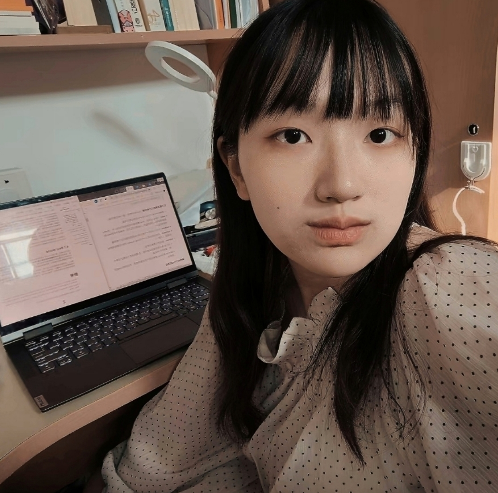
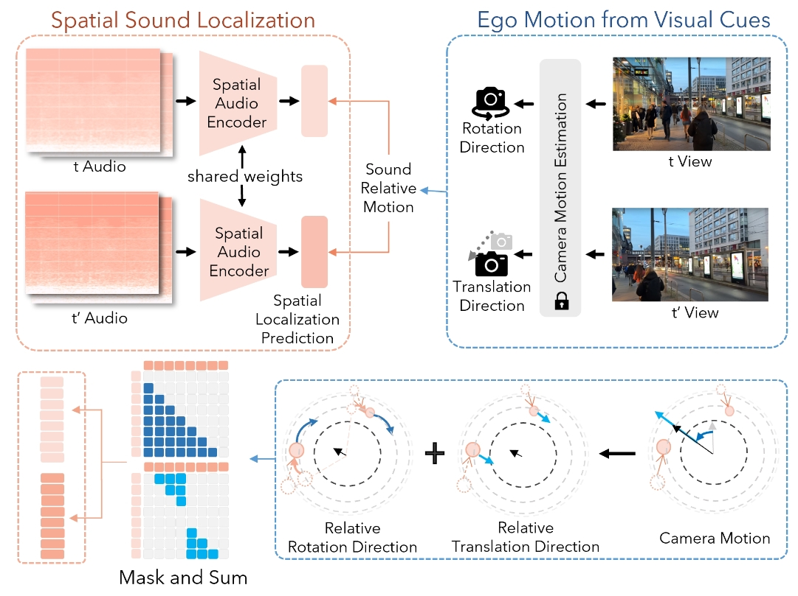
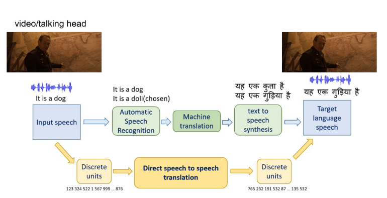

Physically-Grounded Video to Spatial Audio Generation
Generate spatial audio from video by grounding sound generation in physical interactions and visual scene understanding.
Hi! I received B.E. at Tsinghua University, where I study computer science and statistics.
Email: anna.min1754@gmail.com (if you prefer an edu email, annamin@csail.mit.edu)

I study agentic and generative models from first math principles. I previously spent time in computer vision, signal processing and multimodal learning to study how different modalities interact and disentangle.
Generate spatial audio from video by grounding sound generation in physical interactions and visual scene understanding.

A unified framework for spatial audio perception and generation, connecting multimodal understanding with controllable audio synthesis.

Develop proactive world models that enable agents to infer social dynamics and intervene toward goal-oriented intelligence.

Core contributor to Pika 1.0, a generative video model enabling text-to-video creation and video editing.

Learn spatial sound sources in the wild using ego-motion signals derived from visual cues with limited perspectives.

Propose a dataset and pipeline with aligned bilingual audio tracks sharing similar emotions without using text as an intermediate for lesser-spoken languages and dialects.

Study geometric relationships across multimodal representations from an information-theoretic perspective.

Revisit cascaded speech translation systems and analyze when end-to-end approaches are unnecessary.
In the past I designed and developed video games (eg: A Player vs AI Strategy Game). My Chinese name is pronounced as Ān Nà, which is similar to Anna.